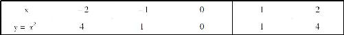
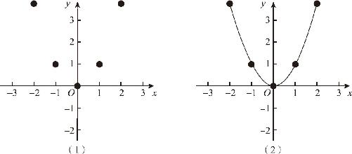
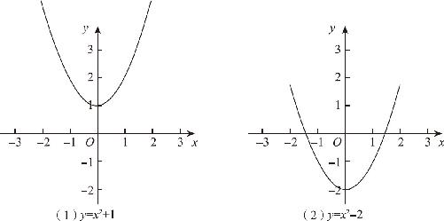
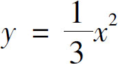
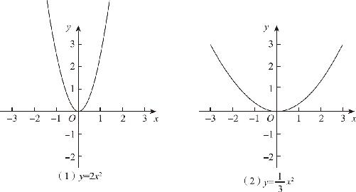
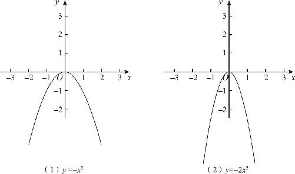
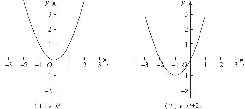

先来看一个最简单的二次函数y ＝x 2 ．为了了解这个函数的基本特征，先从基本的描点连线绘图开始．首先，画出一个空的坐标系；然后，依次计算出准备描的点的坐标数据，由y ＝x 2 得到表13－1所示的坐标数据．
表13－1

通过坐标数据描点连线完成后，我们发现，y ＝x 2 的函数图象是一条U形曲线，它的最低点经过原点，左右对称并且开口向上，在x ＞0的情况下，随着x 的逐渐增大，y 的增大速度会变得越来越快，因此，这条曲线的倾斜度会越来越陡．（如图13－4所示）这就是一条典型的二次曲线，由于它和物体在重力场中抛落的轨迹高度相似，因此二次曲线又被称为抛物线．

图13－4
接下来，在二次函数形的抛物线上，再次体验一下加减乘除的作用．首先，加减的作用可以让函数图象沿着y 轴的方向上下移动，如果我们绘制出y ＝x 2 ＋1的图象就会发现，函数图象果然是向上移动了1个单位长度；同样，如果我们绘制出y ＝x 2 －2的图象也会发现，函数图象就向下移动2个单位长度．（如图13－5所示）由此可见，加减的移动变换效应可以独立发挥作用，无论是一次函数还是二次函数，它们的效果都是相同的．

图13－5
同时，乘除的效果会改变y 的变化率，导致函数图象在竖直方向上拉伸和压缩．如果我们作出y ＝2x 2 的函数图象就会发现，抛物线的开口变窄了，这是因为x 2 的系数增大以后，y 增大的速度变快了，虽然抛物线是一条曲线，但是与y ＝x 2 相比，开口变窄同样意味着曲线变得更陡了，它的本质和改变一次函数直线的斜率没有差别，同样意味着在y 轴方向上进行了拉伸放大的作用．同样，如果我们作出

的函数曲线，就会发现，抛物线的开口变大了，曲线变得比原来更平缓了，这意味着函数图象沿着y 轴的方向被压缩了．对于一次函数而言，y 轴的拉伸就意味着直线的斜率变大；对于二次函数而言，y 轴的拉伸就意味着抛物线的开口变窄，y 轴的压缩就意味着抛物线开口变大．（如图13－6所示）
图13－6
最后，我们绘制出y ＝－x 2 的函数图象就会发现，当x 2 的系数变为负数以后，虽然函数图象的形状没有改变，但是与y ＝x 2 相比，抛物线上下翻转，变得开口向下了．此时，如果我们再次尝试y ＝－2x 2 的函数图象就会发现同样的结果．（如图13－7所示）

图13－7
通过上述过程，我们不难发现：对于任何一个函数y ＝ax 2 ＋c 而言，改变a 的绝对值的大小，只会影响抛物线开口的大小，a 的绝对值越大，抛物线的开口越窄；a 的绝对值越小，抛物线的开口越大．改变a 的正负，只会影响抛物线开口的方向，当a ＞0时，抛物线开口向上；当a ＜0时，抛物线开口向下．改变常数项c 的值，只会影响抛物线上下的位置，当c ＞0时，抛物线沿着y 轴向上移动；当c ＜0时，抛物线沿着y 轴向下移动，但无论如何移动，抛物线始终是在y 轴的左右两侧严格对称的．
那么，为什么抛物线不能左右移动呢？我们知道，一个标准的二次函数不仅要有二次项和常数项，还应该有一次项，它的表达式应该是y ＝ax 2 ＋bx ＋c ．如果我们在y ＝x 2 的基础上加上个一次项，变成了y ＝x 2 ＋2x ，函数图象又会发生怎样的改变呢？
抛物线的开口大小一点都没变，反倒是位置发生了移动，不但垂直位置移动了，而且水平位置也改变了，抛物线不在y 轴的两侧对称了，对称轴移动到了y 轴的左侧．（如图13－8所示）

图13－8